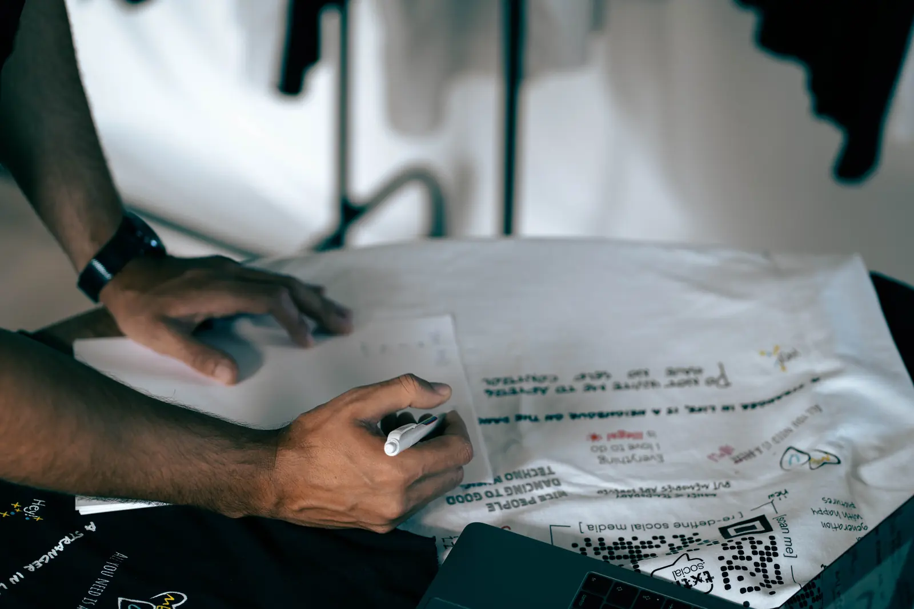
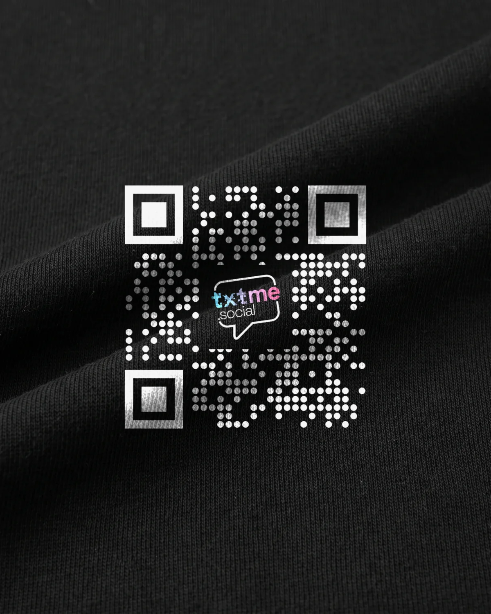
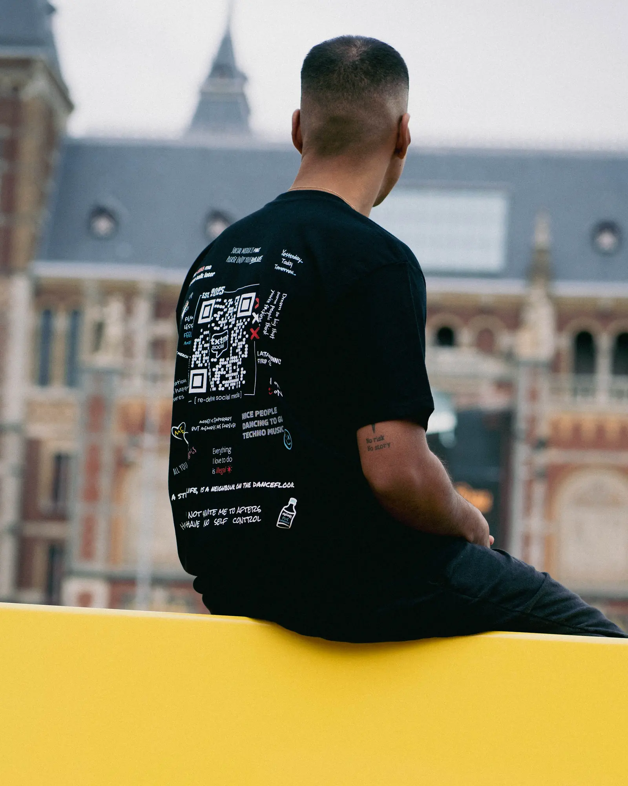
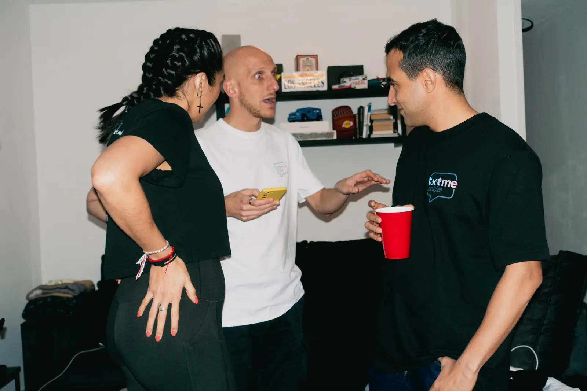
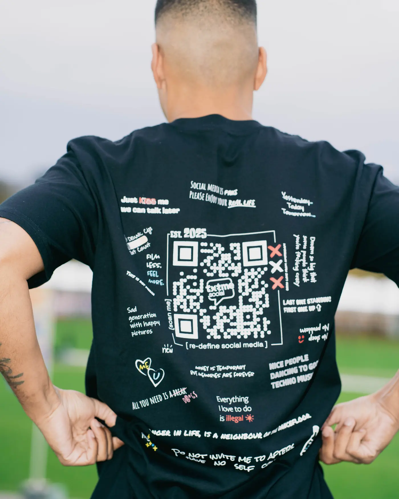
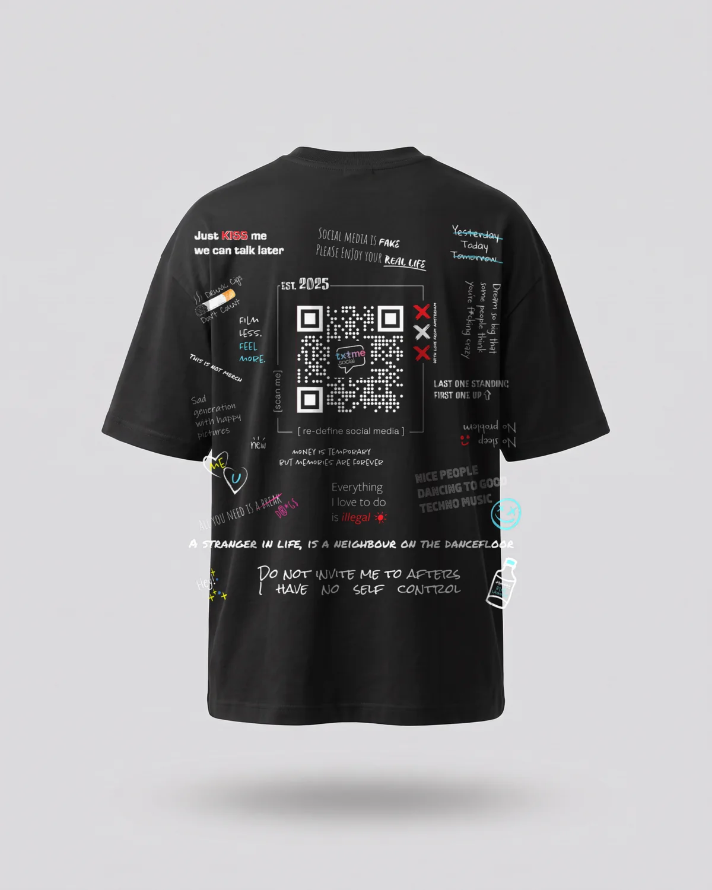
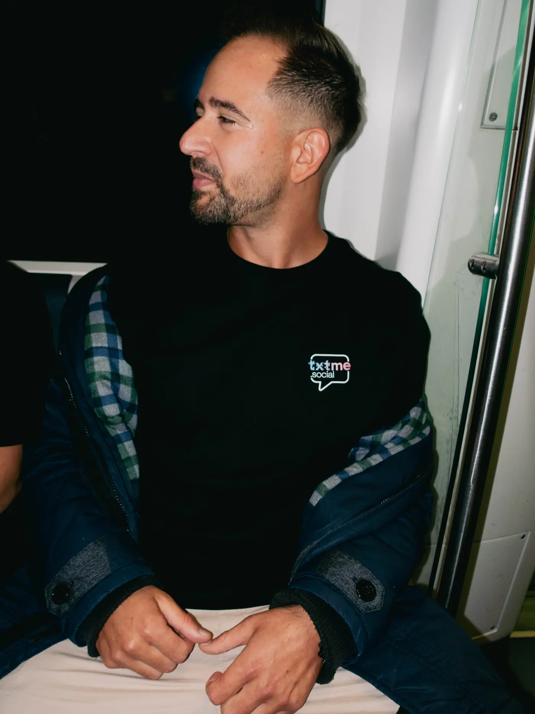

Brand guidelinestxtme.social · November 2026
txtme.social
For ambassadors, partners, shops and the team of txtme.social.
The voice,word for word.
From the Brand Voice of txtme.social. Nothing added, nothing softened.
txtme.social speaks to people who feel mentally drained by modern internet culture but still trapped inside it.
- brutally honest
- emotionally aware
- slightly aggressive
- self-aware
- culturally conscious
- reflective, not preachy
Not anti-tech.
Anti-manipulation.
Anti-performance.
Anti-fake connection.
Sharp. Minimal. Direct.
It should feel like:
- a thought you weren’t ready to hear
- a late-night realization
- someone saying the quiet part out loud
The brand can be confrontational, but never fake-edgy or try-hard.
- algorithmic addiction
- identity performance
- doomscrolling
- digital loneliness
- overstimulation
- emotional numbness
- performative lifestyles
- attention as currency
- short sentences
- clean wording
- no filler
- emotionally loaded
- highly quotable
The audience should feel:
- exposed
- understood
- uncomfortable
- hyper-aware
txtme.social doesn’t act superior.
It knows it’s part of the same system it critiques.
The bubbleand the name.
The logo of txtme.social, as a vector. Three versions, one rule each.
The vector logo of txtme.social. On the site it is a CSS mask: light on black, dark on bone, one file.
Dark version with the gradient fills of txtme.social, for light surfaces.
The gradient version of txtme.social. Large and centred in the hero of the home page.
- The logo is the speech bubble with the wordmark inside. It is never redrawn or reset in type.
- One colour per surface: white on black, ink on bone. The gradient version only where txtme.social uses it, in the hero.
- Small in the header: 38 px, as a white vector mask. Large in the hero: 204 px on desktop, 116 px on a phone.
- The inside of the bubble is transparent. A line that runs behind the logo is covered in the width of the bubble.
- No shadows, no frames, not distorted, not rotated.
Two surfaces,two signals.
Black and bone carry every page. Cyan and pink are the signal of txtme: a word, a dot, a gradient.
The ground. Black, neutral, no blue cast.
The light surface. Every page has at least one.
Off-white, never pure white. Grey for second lines.
Signal colours of txtme.social. As a word, a dot, a gradient. Never as a surface.
The light surface turns the tokens: text becomes black, grey darker.
Gradients never sit on top of anything that moves.
Where the colourscome from.
Black is the ground. Neutral, without a blue cast, so that the colour photos of the shoot carry the page.

Bone is the light surface, warm like paper. Every page changes surface at least once.

The two colours of txtme.social. They appear as a single word, as a dot and as the gradient between them, never as a surface.
One typeface,every role.
Space Grotesk, variable from 300 to 700, served from the site itself.
| Size | Weight | Line | Tracking | Use | |
|---|---|---|---|---|---|
| Brand Book | 48–144 px | 600 | 0.94 | −0.035em | menu, statements, closing |
| Brand Book | 43–102 px | 600 | 0.98 | −0.03em | page titles |
| Brand Book | 37–78 px | 700, capitals | 1.0 | −0.005em | only the statement on the home page |
| Brand Book | 32–62 px | 600 | 1.04 | −0.025em | chapter headlines, mostly in the soft gradient |
| Brand Book | 18–24 px | 600 | 1.25 | −0.012em | cards, questions, price |
| Brand Book | 18–22 px | 400 | 1.5 | −0.008em | introductions, chapter texts |
| Brand Book | 16 px | 400 | 1.65 | −0.004em | body text, product name |
| Brand Book | 11 px | 600 | 1 | +0.22em, capitals | labels, buttons, navigation |
| Brand Book | 12 px | 400 | 1.5 | +0.01em | notes, second lines |
| 01 | 12 px | 500 | 1 | +0.12em, tabular | chapter numbers, counters, in cyan |
- Body text under 64 characters per line.
- Headlines with balanced line breaks.
- Numbers with tabular figures.
- Capitals only as small labels with 0.22em tracking.
- No light weight (300) in headlines; 600 everywhere, 700 only in the home page statement.
Hairlines,no corners.
How a page is built: widths, distances, what separates and what does not exist.
- Page width 1480 px, side margin 20 px on a phone, 32 px from 640 px.
- Sections 96 / 144 / 176 px top and bottom (phone / from 640 / from 1024). Separated by a change of surface or a hairline.
- Chapter head: gradient dash, number in cyan plus label, headline in the soft gradient.
- No rounded corners except colour circles and dots. No shadows, no blur. Chapter images carry the thin gradient frame, product images none.
- Images sit on the surface colour; the aspect ratio is set in the element (4:5, 3:2, 16:9), nothing jumps while loading.
- Interactive areas at least 44 × 44 px.
Headline in the soft gradient
Body text in Space Grotesk 400, under 64 characters per line, on surface. A hairline separates, nothing is rounded.
ButtonThe shootcarries the site.
Editorial photos in colour, products on studio ground, the app only as its own screens.





- The shoot carries the site: editorial photos from ADE Amsterdam, in colour, never desaturated.
- Product images in 4:5: blank garment on an invisible form, light grey studio ground, soft floor shadow. Front with the small logo on the left chest, back with the real print and the real QR code.
- App screens stay the only images of the app itself.
- Should not look like AI (brief of txtme.social). No stock photography, nothing invented.
One beat,then stillness.
Every movement on the site follows one easing and uses only transform and opacity.
- One easing for the whole site: quick at the start, soft at the end. Only transform and opacity.
- Load intro: lines rise 1.1 s from below, staggered 100–580 ms. Then the page stands still.
- Reveal: 24 px from below plus opacity, 0.9 s, once per element.
- Images on hover: scale 1.03 in 1.2 s. Product cards cross-fade to the back in 0.7 s.
- Not in, on purpose: image sequences, video scrubbing, parallax, blur, autoplay, scroll libraries. Native scroll stays.
- If the device is set to reduce motion, everything stays still.
Lines thatare in use.
Wording that is in use. Quote it as it is.
The platform that wants you offline.
Claim of txtme.social, hero of the home pageYou won’t find anyone here through search. You meet, someone scans your shirt, and only then you’re connected.
Line under the claim, home pageThis was never about merch. The shirt is just the gateway.
Instagram of txtme.socialThree cuts. Your code.
Home page, section «Wear your code»
Everything forthe next piece.
Logo, colours and typeface as one package. Photos in ready-made sizes in the photo archive.
Every file of the brand, also one by one under «Logo & files».
- Logo
- txtme-logo-white.svg8 KBtxtme-logo-white.png113 KBtxtme-logo-ink.svg12 KBtxtme-logo-ink.png312 KBtxtme-logo-gradient.svg12 KBtxtme-logo-gradient.png292 KB
- Pixel versions
- txtme-logo.png58 KBtxtme-logo-sm.png16 KBtxtme-logo-filled.webp35 KBtxtme-logo-filled-320.webp17 KB
- Everything in one file
- txtme-marke.zip878 KB


txtme.social · txtme.social BV · Amsterdam